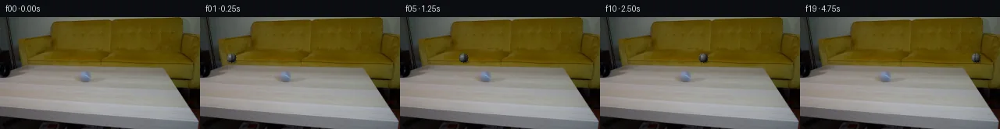

![首帧]()

Round 00
2026-11-05T02:48:49.010522+00:00像素候选变化代码 +299/−0inspection 更新
pixels adb0cdafb36b2888 · code da574b86ac977071
查看本轮 generate.py 真实 diff
--- previous/generate.py
+++ current/generate.py
@@ -0,0 +1,299 @@
+#!/usr/bin/env python3
+"""generate.py — PixelWorld-Text: grey tennis ball rolls from pipe across table.
+20 RGB frames, 256×144, 4 fps, 5 seconds. Frame 00 == first_frame.png."""
+
+import numpy as np
+from PIL import Image
+from pathlib import Path
+import sys
+
+# ── Config ──────────────────────────────────────────────────────────────────
+W, H = 256, 144
+N_FRAMES = 20
+BALL_RADIUS = 6
+BALL_Y = 52 # centered vertically on table surface
+BALL_X_START = 30 # emerging from pipe (frame 00)
+BALL_X_END = 225 # near right edge (frame 19)
+BALL_BASE = np.array([125, 125, 125], dtype=np.float64) # grey tennis ball
+
+# Pipe occlusion: x <= this boundary at each y means "behind pipe"
+# Derived from first_frame.png analysis
+PIPE_RIGHT_EDGE = {
+ # y: rightmost x still occluded by pipe body
+ # y < 38: no pipe on table surface this high
+}
+for y_start, y_end, x_edge in [
+ (38, 43, 23), (43, 47, 24), (47, 53, 25),
+ (53, 59, 26), (59, 65, 27), (65, 80, 28),
+]:
+ for y in range(y_start, y_end):
+ PIPE_RIGHT_EDGE[y] = x_edge
+
+# ── Load background ─────────────────────────────────────────────────────────
+bg = np.array(Image.open("first_frame.png"), dtype=np.float64)
+assert bg.shape == (H, W, 3), f"Expected (144,256,3), got {bg.shape}"
+
+# ── Build pipe occlusion mask ───────────────────────────────────────────────
+pipe_mask = np.zeros((H, W), dtype=bool)
+for y in range(H):
+ edge = PIPE_RIGHT_EDGE.get(y, 0)
+ if edge > 0:
+ pipe_mask[y, :edge + 1] = True
+
+# ── Sphere rendering helpers ────────────────────────────────────────────────
+# Precompute sphere normal map for BALL_RADIUS
+diam = 2 * BALL_RADIUS + 1
+yy, xx = np.mgrid[-BALL_RADIUS:BALL_RADIUS + 1, -BALL_RADIUS:BALL_RADIUS + 1]
+dist2 = xx * xx + yy * yy
+sphere_mask = dist2 <= BALL_RADIUS * BALL_RADIUS
+dist = np.sqrt(np.maximum(dist2, 1e-6))
+# Normal: pointing outward from sphere center
+nz = np.sqrt(np.maximum(1.0 - (dist2.astype(float) / (BALL_RADIUS * BALL_RADIUS)), 0.0))
+nx = xx.astype(float) / (BALL_RADIUS + 1e-6)
+ny = yy.astype(float) / (BALL_RADIUS + 1e-6)
+# Renormalize
+norm = np.sqrt(nx * nx + ny * ny + nz * nz)
+nx /= np.maximum(norm, 1e-6)
+ny /= np.maximum(norm, 1e-6)
+nz /= np.maximum(norm, 1e-6)
+
+# Light direction (upper-left-front)
+light = np.array([-0.55, -0.55, 0.63])
+light = light / np.linalg.norm(light)
+
+# Diffuse lighting
+diffuse = np.maximum(nx * light[0] + ny * light[1] + nz * light[2], 0.0)
+
+# Specular (Blinn-Phong half-vector for upper-left highlight)
+view = np.array([0.0, 0.0, 1.0])
+half = (light + view) / np.linalg.norm(light + view)
+specular_dot = np.maximum(nx * half[0] + ny * half[1] + nz * half[2], 0.0)
+specular = np.power(specular_dot, 32.0)
+
+# Ambient term
+ambient = 0.25
+
+# Precompute lit sphere colors (grey base)
+ball_r = BALL_BASE[0] * np.clip(ambient + 0.55 * diffuse + 0.30 * specular, 0, 1.2)
+ball_g = BALL_BASE[1] * np.clip(ambient + 0.55 * diffuse + 0.30 * specular, 0, 1.2)
+ball_b = BALL_BASE[2] * np.clip(ambient + 0.55 * diffuse + 0.30 * specular, 0, 1.2)
+
+# ── Tennis ball seam patterns (precompute for rotation) ────────────────────
+# Two curved seams forming a figure-8 on the ball surface
+def make_seam_mask(angle_offset=0.0):
+ """Create seam mask for rotated ball. Seams are thin dark curves."""
+ # Project sphere points to 2D angular coordinates
+ # theta: angle from top (polar), phi: angle around vertical axis
+ theta = np.arccos(np.clip(ny / (BALL_RADIUS + 1e-6), -1, 1)) # 0 at top, pi at bottom
… diff truncated; 212 more lines …